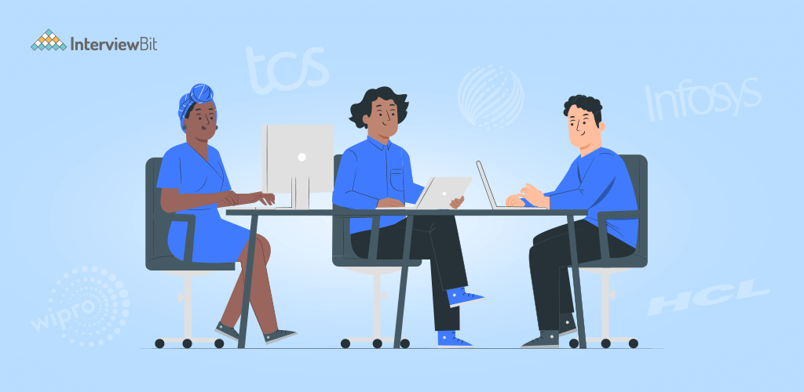

Introduction
IT companies are now a significant part of big businesses as the world is all about everything digital nowadays. From insurance slips to medical reports; from payroll to customer services; from call centers to legal systems to education, every industry is thriving in the market through technology and software.
IT companies of India provide their clients with the expertise in maintaining and monitoring the technical department. Services could range from hardware services to cloud computing, cybersecurity to network infrastructure. The function of an Indian IT company is not limited to a single definition. It is diversified and comprehensive.
IT Functions can be categorized into three departments –
Infrastructure:
This function is inclusive of all the components of hardware, software, and network resources that are significant for the existence and operation of an IT firm. Some services are Networking, platform management, security, storage architecture, etc.Governance:
IT Governance is the function that uses IT systems and new methodologies to incorporate efficient evaluation of a business or any other individual client. As a part of the IT governance team, they focus on delivery, risk management, resource management, strategic alignment, and performance management. Some IT governance companies are COBIT (Control Objectives for Information and Related Technologies), ITIL (Information Technology Infrastructure Library).Functionality:
SaaS (Software as service) or FaaS (Function as service) is a department of IT services that provides a platform for companies to run, develop, and manage functionalities of applications. Some of the examples are cloud computing, database management, etc.Growth of IT Sector in India
 The explosive growth of the IT Industry of India has left many people amazed. The rising Industry flourishes to grow beyond just a service. It is now a significant business in itself. With a growth rate of more than 5% in the coming years, McKinsey suggests that the IT companies will be a billion-dollar industry with a revenue touchdown to $300-$350 billion. Such remarkable growth has exponentially enhanced the better work opportunities for many people in the tech field.
The big tech companies like Microsoft, Wipro, TCS, Google have strong foundations in India owing to their much success in the sector.
The country that used to be known for its agriculture industry is now running on a knowledge-driven industry that has changed the course of business for many.
But with such a massive growth rate, everybody seeks reasons, facts, why, and how there is such a boom in the IT Industry of India.
Here are some of the reasons for such an explosive and consistent rise of IT companies
Product Based Companies
Product-based companies are driven by a plan to introduce products that have good market value and satisfy a wide range of customers.- Adobe
- Amazon
- Microsoft
- Hewlett-Packard (HP)
- Intel
- Paypal
- Salesforce
- Flipkart
- Oracle
Service Based Companies
A service-based company is the one that provides customers, clients the ultimate solution to their requirements or a service to another company.- Tata Consultancy Service
- Infosys
- HCL Technologies
- Wipro Limited
- Redington India Ltd.
- Tech Mahindra Limited
- Deloitte Touche Tohmatsu Limited
- Larsen and Toubro Limited
- Mphasis Limited